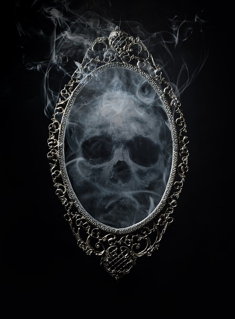
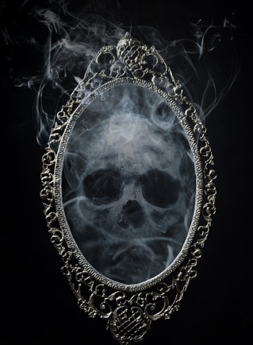
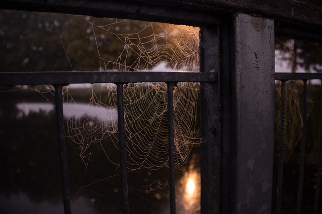
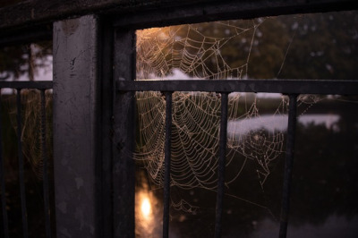
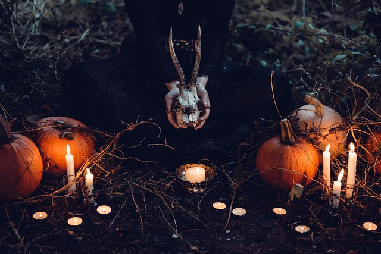

Image 1
 I cropped the image to just the candles and scaled it down.
I cropped the image to just the candles and scaled it down.
Image 2
 I horizontally flipped the image and scaled it down.
I horizontally flipped the image and scaled it down.
Image 3


I cropped the image to focus omore of the skull and scaled it down.
Image 4


I horizontally flipped the imaged and scaled it down.
Image 5

I cropped the image to just the witch and scaled it down.